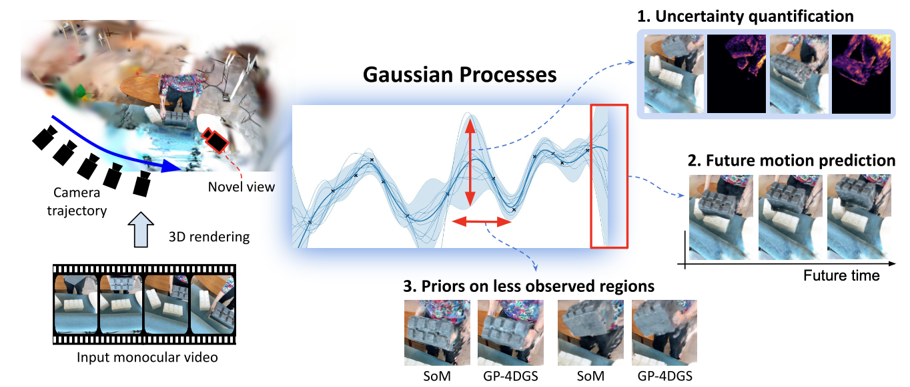
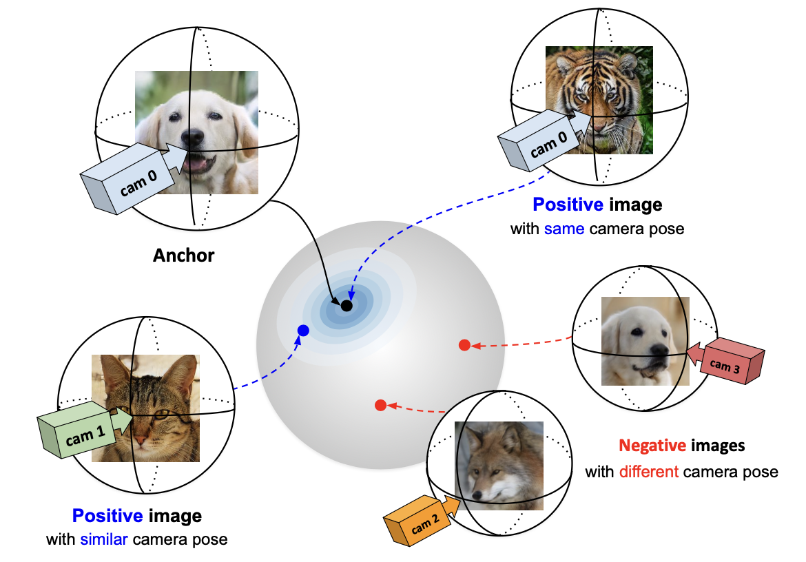
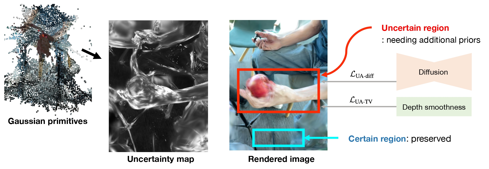
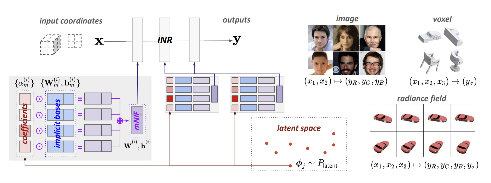
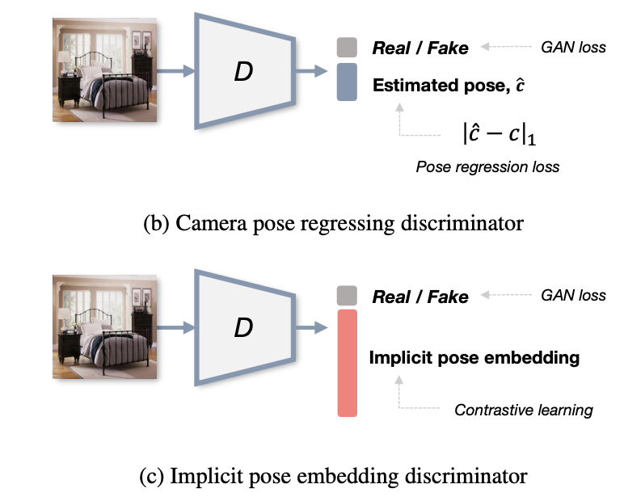
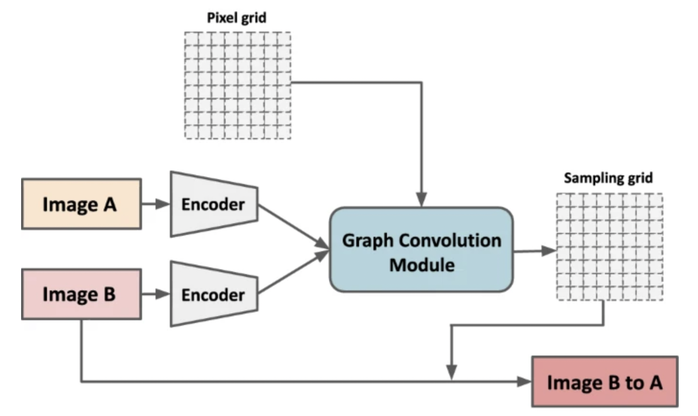
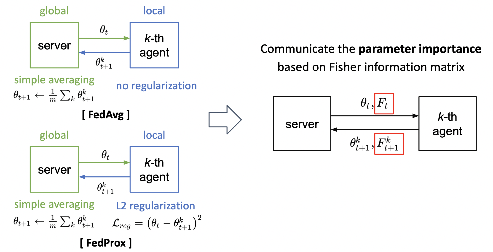

Ongoing
Probabilistic World Modeling & Text-Controllable Physics
- WorldRoPE: world-centric attention across views
- AgentDreamer: text-controllable 3D motion and physics
Ph.D. Candidate · Computer Vision Lab, SNU
My research focuses on 4D world models, probabilistic few-shot dynamic reconstruction, and physical AI, with broad interests in 3D/4D vision and scene understanding.
Ongoing
2025–26
2024
2023
2022

Under Review

Under Review

CVPR 2026

CVPR 2026

WACV 2026

NeurIPS 2024

NeurIPS 2023

arXiv:2304.14005

CVPR 2022 (citation 300+)

MVA (Machine Vision Applications) 2022

Conducted in Machine Intelligence and Data Science Lab.
(430.658 of SNU, Prof. Taesup Moon)
Sep 2025 – Feb 2026
Applied Scientist Intern · London, UK
Feed-forward 4D reconstruction from monocular video.
Jul 2022 – Sep 2022
Research Intern · Seongnam, Korea
3D-aware generation via contrastive learning · ContraNeRF
Ph.D. in progress · Electrical and Computer Engineering
Computer Vision Lab, Seoul National University, Korea
Advisor: Prof. Bohyung Han
B.S. · Naval Architecture and Ocean Engineering
Seoul National University, Korea
Digital Computer Concept and Practice Introduction to Python, Dept. of EE in SNU